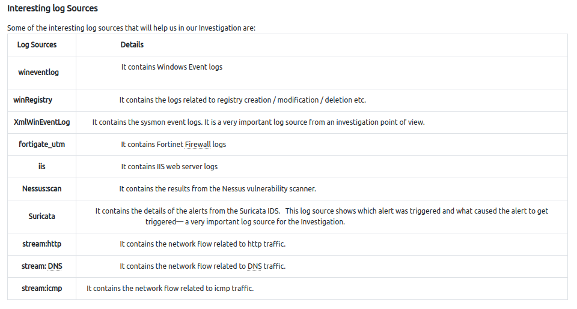

We will follow the Cyber kill Chain Model and map the attacker's activity in each phase during this Investigation. When required, we will also utilize Open Source Intelligence (OSINT) and other findings to fill the gaps in the kill chain.
Scenario
A Big corporate organization Wayne Enterprises has recently faced a cyber-attack where the attackers broke into their network, found their way to their web server, and have successfully defaced their website http://www.imreallynotbatman.com . Their website is now showing the trademark of the attackers with the message YOUR SITE HAS BEEN DEFACED as shown below.
{kind=link}
They have requested "US" to join them as a Security Analyst and help them investigate this cyber attack and find the root cause and all the attackers' activities within their network.
The good thing is, that they have Splunk already in place, so we have got all the event logs related to the attacker's activities captured. We need to explore the records and find how the attack got into their network and what actions they performed.
This Investigation comes under the
Detection and Analysis phase.Splunk
During our investigation, we will be using Splunk as our SIEM solution. Logs are being ingested from webserver/firewall/Suricata/Sysmon etc. We can explore the log sources showing visibility into both network-centric and host-centric activities. 
Note: All the event logs that we are going to investigate are present in
index=botsv1